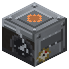

Паровая машина высокого давления
Эпоха 2Пар и механика

стоит

в работе
Пар -> оборот вала, впятеро мощнее малой машины.
Пар -> оборот вала, впятеро мощнее малой машины. Вал прямой, поворот - редуктором, станок - сбоку от шкива.
Параметры
| Эпоха | 2 — Пар и механика |
|---|---|
| Многоблок | нет |
| Привод | даёт вал |
| Баки, mB | 8000 |
| что делает | пар -> вал |
| энергия на входе | пар |
| на выходе | вал 40 л.с. |
| из чего | см. §2 |
| л.с. (Паровая машина ВД) | 40 |
Числа
| пар на 1 л.с. на валу | 1 mB/л.с. |
|---|---|
| паровая машина | 8 л.с. |
| большая паровая машина | 40 л.с. |
Кого кормит
- вал → Воздуходувная машина, Паровой патронный пресс, Приводная муфта, Паровой экскаватор, Смеситель, Нефтяная скважина, Пилорама, Паровой насос, Скиповая лебёдка, Рудная толчея, Паровой молот, Артезианская скважина, Волочильный стан
Как устроено (из кода)
Паровая машина высокого давления (сталь): то же, но мощнее - Transmission.engineLargeHp л.с. и бак побольше.